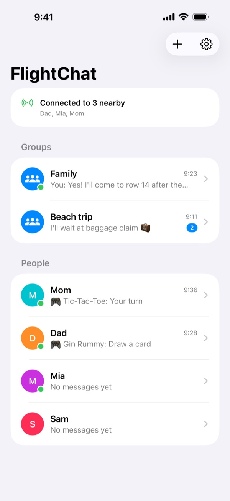
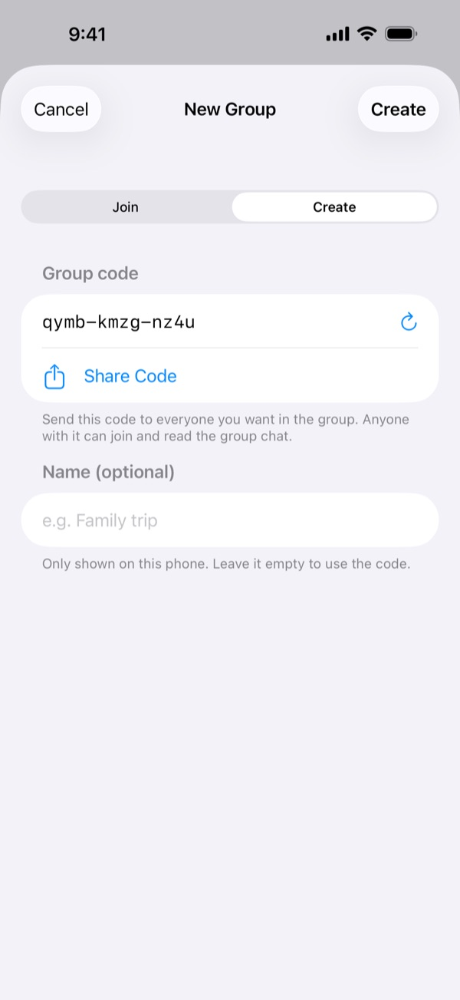
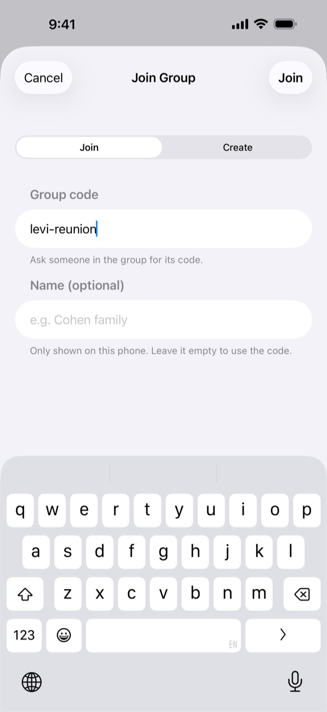
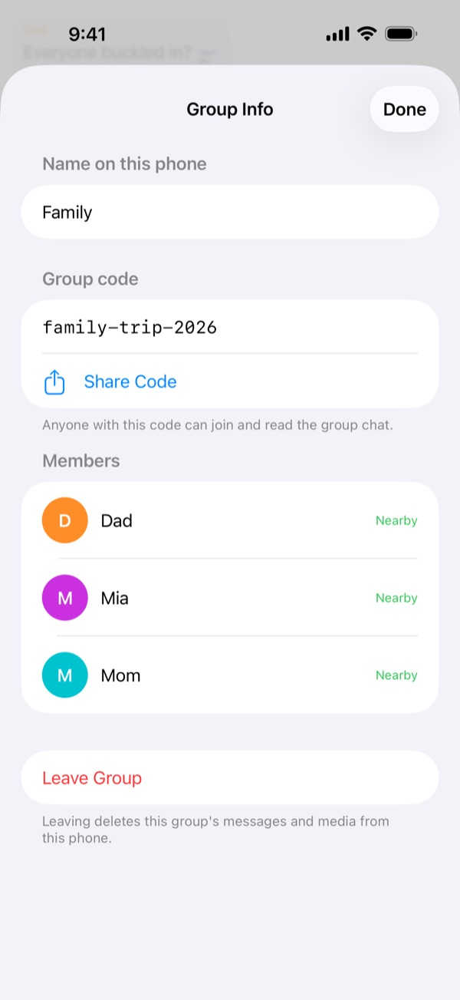
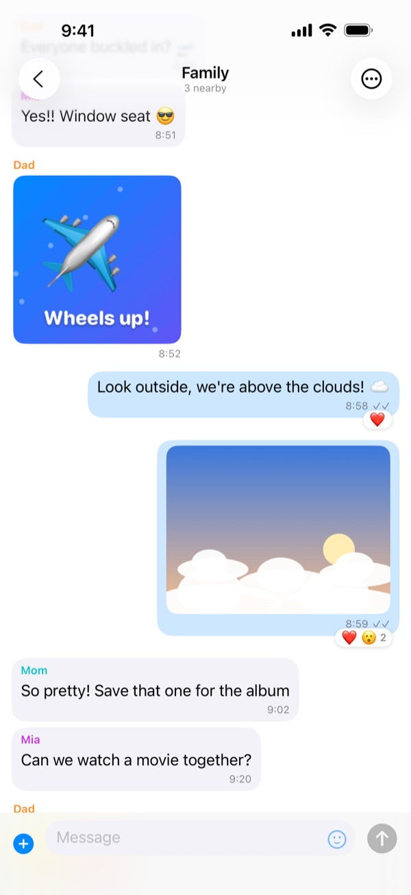
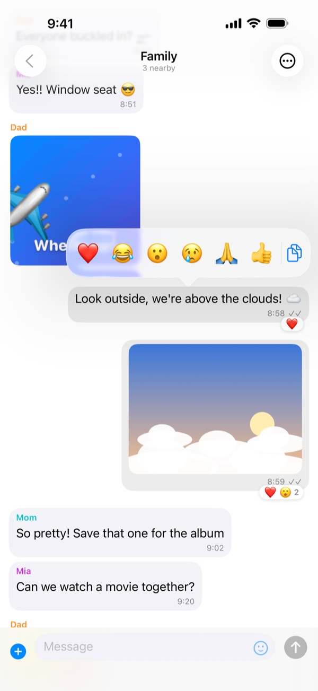
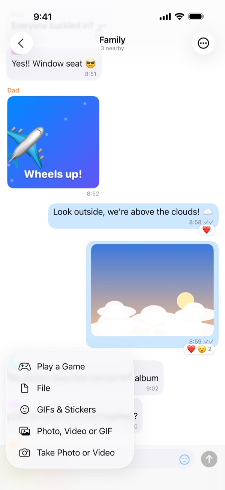
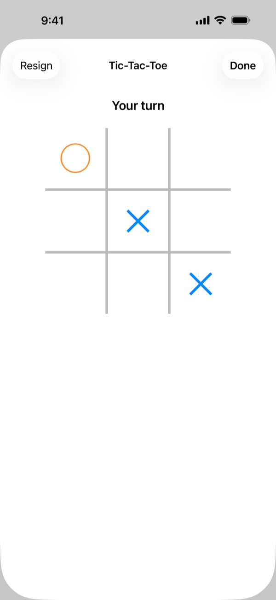
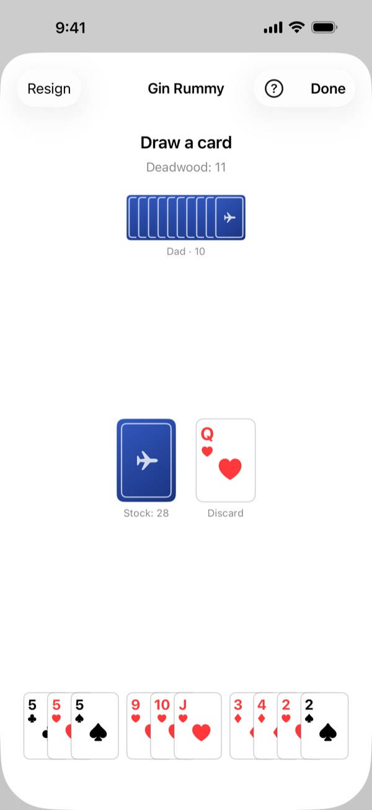
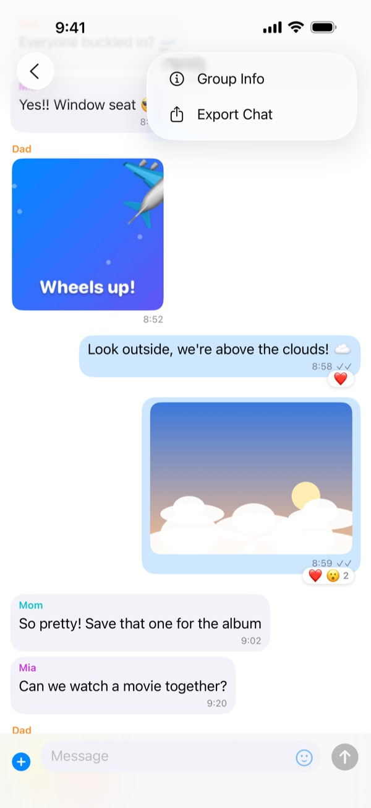

Before you fly
Set everything up while you're together at home or at the gate:
- Install FlightChat on every phone in your group.
- One person creates a group and shares its code with everyone else, for example in a text message.
- Everyone else joins the group with that code.
- Send a test message and check that everyone gets it.
The first time FlightChat opens, allow it to find devices on your local network. It can't find your group without this.
On the plane
- Turn on Airplane Mode as usual.
- Open Control Center and turn Wi-Fi and Bluetooth back on. You don't need to join any network.
- Open FlightChat. The top of the chat list shows who's connected.
Phones only connect while FlightChat is open. When you come back to the app, phones reconnect by themselves and catch up on anything they missed.

Groups
A group is a shared chat for everyone who types the same code. You can be in up to 10 groups at once, for example one for your family and one for friends on the same flight, and stay connected to all of them.
Create a group
- On the chat list, tap +, then Create.
- FlightChat makes up a hard-to-guess code. Give the group a name if you like.
- Tap Share Code to send the code to the others, then tap Create. You can also share it later from Group Info.
Join a group
Tap +, then Join, and type the code you were given. Capital letters don't matter.
Rename, share or leave a group
Open the group's chat, tap ⋯, then Group Info. There you can change what the group is called on your phone, see and share its code, see its members, or leave it. Leaving a group deletes its messages and media from your phone.
Keep codes private. Anyone with the code can join the group and read its chat.



Chatting
- Group and 1-on-1 chats: each group has its own chat. People lists everyone you share a group with. To message one person privately, tap their name there.
- Photos, videos, GIFs and files: tap + next to the message box. Choose Take Photo or Video to use the camera (videos up to 2 minutes), or pick something you already have. Tap the smiley face for stickers and GIFs.
- Reactions: touch and hold a message, then pick an emoji. You can copy text from there too.
- Full screen: tap a photo or video. Turn your phone sideways to see it larger. Use the share button to save it.
- Ticks: ✓ means the message is saved and sent to whoever is connected. ✓✓ means everyone it's for has it.
- Not nearby? Messages to people who aren't connected are sent when you reconnect.



Games
Play a quick game with someone in a 1-on-1 chat: tap +, then Play a Game, and choose one. A game card appears in the chat for both of you; tap it to play. When it's over, tap Rematch to play again, with the other person going first. If a game of that kind is already going in the chat, choosing it again opens that game.
- Tic-Tac-Toe: take turns placing ✕ and ◯. Three in a row wins.
- Four in a Row: take turns dropping discs into a column. Four in a row, across, down or diagonally, wins.
- Rock-Paper-Scissors: both pick at the same time. Neither phone can see the other's pick until you've both picked.
- Checkers: move diagonally and capture by jumping. Kings fly any distance.
- Backgammon: race your 15 checkers home and bear them off. The dice are rolled for you.
Games go only to the other player. If one of you moves out of range, the game waits and carries on when your phones reconnect.

Card games
Card games start the same way: +, then Play a Game. The deck is shuffled when the game starts, and each of you sees only your own hand, at the bottom of the screen. Tap the stock to draw and tap a card to play it; cards you can play now are raised.
- War: you each flip your top card and the higher card takes both (aces are high). On a tie, the next round's winner takes those cards too. After 26 rounds, whoever has won more cards wins.
- Crazy Eights: seven cards each. Play a card of the same suit or rank as the top of the pile, or draw. Eights can go on anything and let you name the suit to follow. Play all your cards first to win.
- Gin Rummy: ten cards each. On your turn, draw from the stock or the discard pile, then discard. Make melds: three or four of a kind, or three or more in a row of one suit. With 10 points or less left over, you can knock to end the hand; with none left over, that's gin.
- Group games for 3 or 4: in a group chat, tap +, then Play a Game, and choose Crazy Eights or Gin Rummy. Pick 2 or 3 people (those nearby are already ticked) and tap Deal. Turns go round in order. In Crazy Eights everyone gets 5 cards; in Gin Rummy 10 each for three players and 7 each for four, and when someone knocks, everyone else lays off and counts. Everyone in the group sees the game, but only the players get cards, and nobody sees anyone else's hand.
Your hand stays on your phone's screen only; the other player sees how many cards you hold, not which. At the end of Gin Rummy, both hands are shown so you can check the score.

How to play
The rules of every game in FlightChat. In a game, tap How to play to jump straight to its rules.
Tic-Tac-Toe
- Two players take turns on a 3 × 3 grid. The player who starts is ✕; the other is ◯.
- On your turn, tap an empty square to put your mark there.
- Get three of your marks in a row, across, down or diagonally, to win. If the grid fills up first, it's a draw.
Four in a Row
- Two players take turns dropping discs into a board 7 columns wide and 6 rows high. The player who starts is red; the other is yellow.
- On your turn, tap a column: your disc falls to the lowest empty space in it. A full column takes no more discs.
- Line up four of your discs, across, down or diagonally, to win. If the board fills up first, it's a draw.
Rock-Paper-Scissors
- Both players pick rock, paper or scissors at the same time.
- Rock beats scissors, scissors beat paper, and paper beats rock. The same pick on both sides is a draw.
- Your pick stays sealed until the other player has picked too, so neither of you can see the other's choice first.
Checkers
- Each player has 12 pieces on the dark squares of an 8 × 8 board, with their own pieces at the bottom. The player who starts has the light pieces.
- Pieces move one square diagonally forward. A piece captures by jumping over an opponent's piece next to it onto the empty square beyond, forwards or backwards.
- Capturing is compulsory. If the same piece can capture again after landing, it keeps going in the same turn: tap each landing square in turn.
- A piece that reaches the far row becomes a king (♛). Kings move any distance diagonally, and capture a piece at any distance, landing on any empty square beyond it.
- You win when the other player has no pieces left or can't move. If only kings move for 30 turns each with nothing captured, it's a draw.
Backgammon
- Each player has 15 checkers and moves them round the board towards their home board, at the bottom right, then bears them off. The first to bear off all 15 wins.
- Each turn you get two dice, rolled for you. Move one checker by each die, or one checker by both. Doubles are played four times. You must use both dice if you can; if only one fits, it must be the larger one when it can be played.
- You can't land on a point with two or more of the other player's checkers. Landing on a single one hits it: it goes to the bar and has to come back in through its owner's entry before anything else of theirs moves.
- Once all your checkers are in your home board, you can bear them off with the exact number, or with a larger die from your highest point.
- Tap a checker, then where it goes, once for each die. Undo takes a step back and End turn ends your turn. If you can't move, tap Pass.
- Winning before the other player has borne off any checker is a gammon; if they still have a checker on the bar or in your home board, it's a backgammon. There's no doubling cube.
War
- The deck is shuffled and split in two: 26 cards each, face down.
- Each round, both players flip their top card, and the higher card wins both. Aces are highest, then king, queen, jack, and 10 down to 2.
- If the two cards are the same rank, they stay in the middle, and the winner of the next round takes them too.
- After 26 rounds, the player who won more cards wins the game.
Crazy Eights
- With two players, each gets 7 cards; with three or four (in a group chat), 5 each. One card is turned up to start the pile, and the rest are the stock.
- On your turn, play a card that matches the top of the pile by suit or by number, or draw a card from the stock. You can draw as many as you like before you play.
- Eights are wild: play one on anything, then choose the suit the next player must follow.
- If you can't play and the stock is empty, tap Pass.
- The first player to get rid of all their cards wins. If nobody can play any more, the lowest score in hand wins: eights 50, picture cards 10, aces 1, other cards their number.
Gin Rummy
- Each player gets 10 cards (7 each when four play in a group chat). One card starts the discard pile, and the rest are the stock.
- On your turn, take the top card of the stock or of the discard pile, then discard one card. You can't throw back the card you just took from the discard pile.
- Collect melds: three or four cards of the same number (7♣ 7♥ 7♠), or three or more in a row in one suit (4♥ 5♥ 6♥). Aces are low. FlightChat groups your melds for you.
- Cards not in a meld are deadwood: aces count 1, number cards their number, picture cards 10. Your total shows as Deadwood.
- When your deadwood is 10 or less after discarding, you can knock to end the hand; with none at all, that's gin. The other players then add any cards they can to the knocker's melds (not after gin).
- Scoring: the knocker wins the difference in deadwood with each other player. Gin scores everyone's deadwood plus 25. A player with as little deadwood as the knocker undercuts them and wins the difference plus 25. If the stock gets down to 2 cards, the hand is a draw.
Export a chat
Open the chat, tap ⋯, then Export Chat. FlightChat makes a ZIP file with the conversation as text and the photos, videos and files that are on your phone. Save it to Files, AirDrop it, or email it once you're back online.

Blocking and reporting
- In a 1-on-1 chat: tap ⋯, then Block or Report.
- In a group chat: touch and hold their message, then tap the hand.
- You stop seeing their messages, and they can't message you. They aren't told.
- Report and Block also emails a report to us. We reply within 24 hours.
- Unblock people in Settings → Blocked people.
Someone you've blocked who has the group code can still read the group chat. To remove them completely, agree on a new group with everyone else and leave the old one.
If you feel unsafe on board, tell a crew member straight away.
If phones don't connect
- Check that Wi-Fi and Bluetooth are both on in Control Center. Airplane Mode turns them off.
- Keep FlightChat open on both phones.
- Check that you're in the same group: open the group chat, tap ⋯, then Group Info, and compare codes.
- In the iPhone Settings app, open FlightChat and make sure Local Network is on.
- Move closer together. Phones a few rows apart usually connect; the far end of a big plane may not.
- Just joined a group? Phones already in it find you within a few seconds.
- Up to 8 phones can be connected to each other at once, including yours.
Languages
FlightChat uses your iPhone's language: English, French, Spanish, Chinese, Japanese, Hebrew, Korean or Arabic. Hebrew and Arabic read right to left. Messages, names and stickers always appear exactly as they were sent. To pick a language just for FlightChat, tap the gear on the chat list, choose a Language, tap Save, then close and reopen FlightChat. You can also choose it in the iPhone's Settings app, under Apps → FlightChat → Language.
Your data
Your messages stay on your phone and the phones in your groups. There are no accounts and no servers. To delete everything, open Settings and tap Clear Chat History. Read the Privacy Policy and Terms of Use for details.
Contact
Something not working, or a question? Email biomass-65-jumbo@icloud.com.